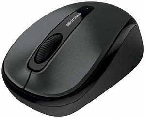

| Componente de la computadora |
|---|
Mouse El Mouse es un dispositivo periférico de entrada, de uso manual, diseñado para facilitar la interacción del usuario con las interfaces de entorno gráfico de numerosos sistemas informáticos. Hoy en día es un accesorio popular y tradicional de la computación.El mouse funciona captando a través de diversos mecanismos el movimiento que el usuario le imprime al desplazarlo con su mano, y lo traduce en la pantalla a través de la posición de un cursor o puntero, usualmente en forma de flecha o de mano. Para ello debe transmitir las señales del movimiento detectado al computador, lo cual puede hacerse a través de un cable PS/2 , USB o bien de manera remota mediante diversos dispositivos inalámbricos. |